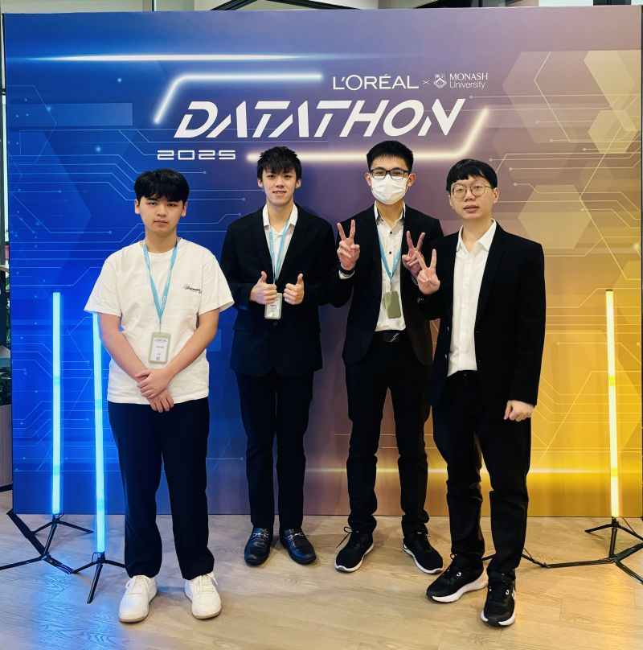
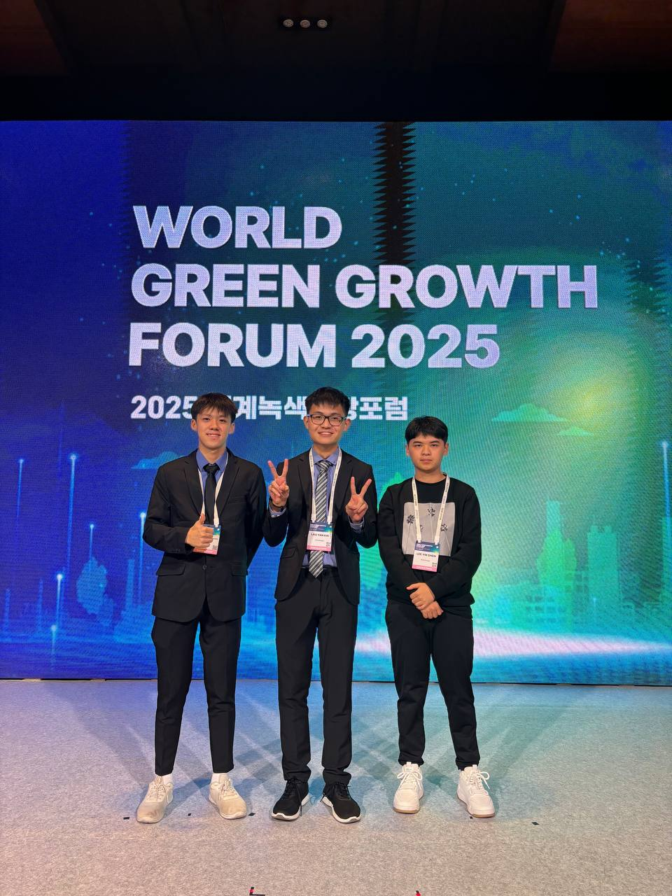

Awards
Recognition & achievements.

🏆 Top 10 Finalist
L'Oréal × Monash Datathon 2025
- Cleaned and pre-processed ~5 million multilingual social media comments, standardising raw unstructured data into structured, analysis-ready outputs for downstream NLP processing.
- Designed an interactive Streamlit dashboard translating complex pipeline outputs into actionable insights on emerging consumer themes and brand perception drivers for brand managers.

🥇 Top 5 Finalist — Fintech & Secure Digital Track
MyAI Future Hackathon 2026
- Developed an AI-powered web UI that helps Malaysian users detect scam messages quickly.
- Integrated Google Vertex AI Search to enrich the knowledge base with blacklisted scam phone numbers and bank accounts.
- Implemented a 4-layer Genkit Flow to coordinate a multi-stage scam detection pipeline, using a short-circuit fallback to minimize API latency and compute costs.

🌏 Global Finalist — Top 5 International Teams
Green Growth Idea Hackathon 2025
- Developed a data-driven proposal for "Encouraging Carbon Neutral Practices in Daily Life", presented to international experts at the World Green Growth Forum in Pohang, South Korea.